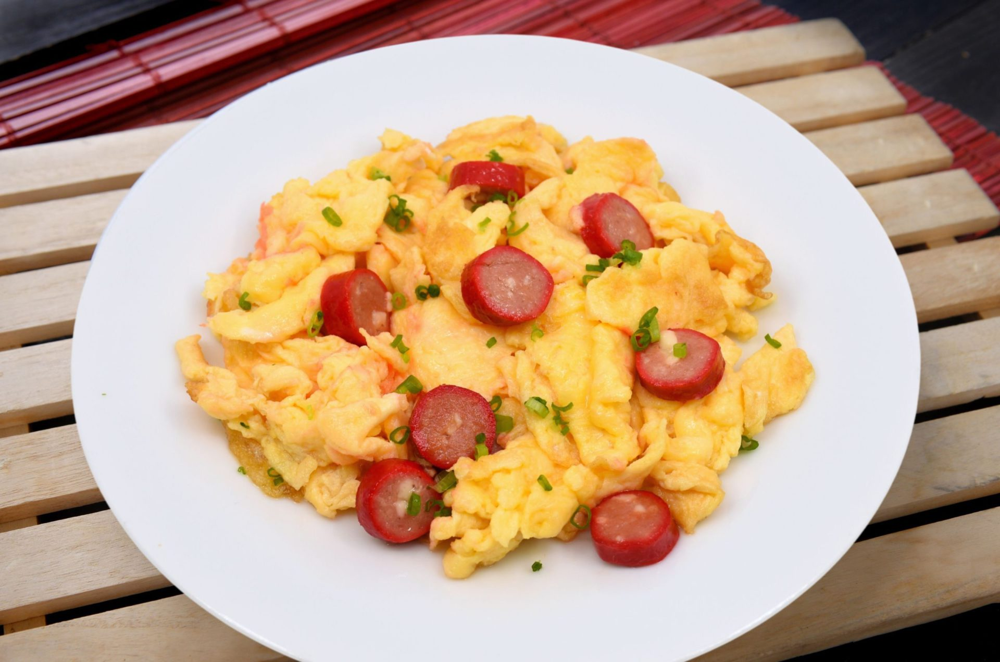

Home
Scrambled Hot Dogs and Eggs

You'll love these Scrambled Hot Dogs and Eggs—a quick, savory combo of juicy hot dogs and fluffy eggs, crisped to perfection.
Simple, hearty, and packed with comfort in every bite.
Ingredients
- 1/2 tablespoon butter
- 1 hot dog, cut into 1/2-inch slices
- 1 large egg
- 1/4 teaspoon kosher salt
- 1/8 teaspoon freshly ground black pepper
Steps
- Melt butter in a small nonstick skillet over medium heat. Add hot dogs and cook until browned on all sides, about 2 minutes. Turn heat to down to medium-low.
- Whisk eggs with salt and pepper until well blended and pour over hot dogs. Cook, stirring constantly until eggs are set. Serve immediately.